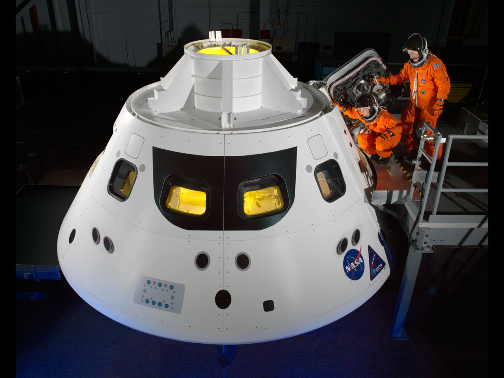

Detalhes da Missão
Como foi o voo ao redor da Lua
Informações gerais
A Artemis 2 foi lançada em 1 de abril de 2026, às 18:35, do Launch Complex 39B, no Kennedy Space Center Flórida. O foguete utilizado foi o SLS (Space Launch System), com a cápsula Orion no topo.
O módulo de serviço que propulsionou a cápsula foi construído pela Agência Espacial Europeia (ESA) na Alemanha, reforçando a cooperação internacional do programa Artemis.
No lançamento o foguete gerou 8,8 milhões de libras de empuxo, mais potência do que o Saturno V das missões Apollo.

Cronologia da missão
- 1 de abril: Lançamento
- Liftoff às 18:35
- Separação dos propulsores laterais
- Implantação dos painéis solares
- 2 de abril: Órbita da Terra
- Testes dos sistemas da Orion
- Manobras manuais pela tripulação
- Injeção trans-lunar
- 6 de abril: Sobrevoo lunar
- Aproximação a cerca de 8.000 km da Lua
- Recorde de distância superado
- 7 a 9 de abril: Retorno à Terra
- Três correções de trajetória
- Teste de construção de abrigo contra radiação
- 10 de abril: Reentrada e amerissagem
- Reentrada a 40.000 km/h
- Splashdown às 17:07 no Pacífico